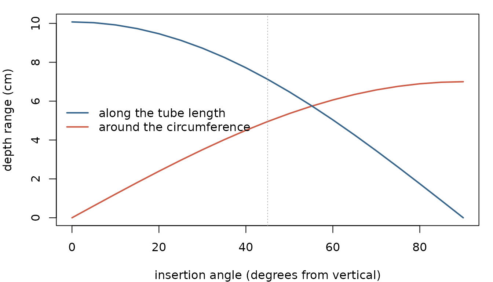

How It Works: Modules, Pipelines and Rules
Johannes Cunow
Source:vignettes/HowItWorks_vignette.Rmd
HowItWorks_vignette.RmdHow It Works
The other vignettes show you what to type. This one explains what happens — which function hands what to which, and the exact rule each one applies when it has to make a decision.
How to read this
Every module follows the same four-part shape:
- What it is for — one paragraph, no jargon.
- The flow — how the functions connect, and in what order.
- The rules — the decisions the code makes, stated exactly. If a number in your results surprises you, the explanation is here.
- Collapsed sections — the algorithm itself, and the edge cases. Open them when you need them; skip them otherwise.
Edge cases are deliberately kept out of the main text. They matter when something goes wrong, and they get in the way when it does not.
Where Rootopia uses a standard method, this document names the method and moves on. Detail is spent on the parts you will not find in a textbook.
The package pipeline
Most analyses run left to right through this chain. You can enter at any point and stop at any point; nothing forces you through the whole thing.
stitch -> threshold -> clean -> (rotation censor)
|
v
skeletonize ----> branching order
|
+--------> size traits (length, diameter, pixels)
|
v
depth map ----> root angle
|
v
distribution indicesTurnover and soil & color sit outside this chain: turnover compares two images, soil & color works on the color channels rather than the root shape.
root_depth_metrics() is not a module. It is a batch
wrapper that can run branching order, size traits, depth mapping, root
angle and the distribution indices over a folder of images; the size
traits and the distribution indices are on by default and the rest are
calc_* switches. Read those sections to understand what it
reports.
Preparing images
Optional steps that happen before any measurement.
Stitching
What it is for
A tube is often imaged as several overlapping frames. This module joins them back into one long mosaic before analysis, so a root crossing a frame boundary is measured once rather than twice.
The flow
stitch_root_scans("path/to/scans", pattern = ".tiff", tubes = "ask")
res <- stitch_root_scans("path/to/scans", pattern = ".tiff",
out_dir = "out", report = TRUE)
res$report # per-join dx, dy, peak, overlapThe rules
Files are grouped into tubes by a pattern in the
filename. group_regex (default
"T0\\d{2}", matching labels like T067) pulls a
tube id from each path; files sharing an id form one sequence, sorted by
filename.
Consecutive frames are aligned by FFT phase correlation on a band along the overlapping edge, then composited with a linear feather blend across the overlap so the seam does not show.
Frames are joined along the image width by default.
For sequences acquired along the tube, set
direction = "vertical"; frames are transposed internally,
stitched the same way, and transposed back.
Check the peak column before trusting a
mosaic. It is the normalized correlation height at each join —
low values mean the alignment was uncertain. Sorting the report by
peak surfaces the weak joins first.
Edge cases
| Situation | What happens |
|---|---|
| A tube has only one frame | Passed through unchanged |
No file matches group_regex
|
Stops |
tubes index out of range |
Stops, naming how many tubes exist and what they are called |
tubes = "ask" in a non-interactive session |
Stops, suggesting indices or names instead |
| Poor alignment | Widen edge_width until it covers the true overlap or
bracket it with min_overlap / max_overlap,
raise vertical_offset past a header strip, or try
preprocess = "grad" for uneven lighting |
Image input and cleaning
What it is for
Getting any image into a form the rest of the package can use, and removing the speckles and pinholes that segmentation leaves behind. Both matter more than they sound: a hole in a root becomes a fake loop in the skeleton, and a speck becomes a fake root.
The flow
img <- load_flexible_image(path, output_format = "spatrast",
scale = "binary", select_layer = 2)
cleaned <- clean_image(img, fill_holes_upto = 5, drop_objects_upto = 5)
report_image_components(img) # how big are the specks, before decidingload_flexible_image() is called internally by nearly
every other function, so you rarely call it yourself except when loading
from a file path.
The rules
One entry point, many input types. File paths,
SpatRaster, RasterBrick, matrices, arrays,
cimg and magick images all converge to one internal
representation. scale controls the value range:
"binary" maps to 0/1, "to_01" divides by 255,
"to_255" multiplies, "none" leaves values
alone. Conversions use fixed factors, never a per-image maximum, so two
images stay comparable.
A hole is not the same as a gap.
clean_image() fills a background region only if it is fully
enclosed — a background region touching the image border is the outside
world, not a hole, and is never filled regardless of size.
An artifact is a small connected foreground region.
By default every foreground region is a candidate, including
ones touching the border. Set protect_border = TRUE to
exempt border-touching regions, on the assumption that they are roots
leaving the frame rather than specks.
Size is a count of connected cells, in pixels by
default. With size_unit = "mm2" and a dpi, the
two thresholds are physical areas instead and are converted to pixel
counts internally, so the same call removes the same physical speck
whether a scan is 300 or 1200 dpi. Use
report_image_components() first to see the actual size
distribution rather than guessing a threshold.
Under the hood
Connected-component labeling and the optional edge smoothing are standard morphology, done byimager (label,
dilate, erode). Rootopia adds the
hole-versus-outside rule and the size thresholds; it does not
reimplement the morphology. See ?clean_image for the kernel
options.
Edge cases
| Situation | What happens |
|---|---|
| Image has no cells | Stops |
fill_holes_upto / drop_objects_upto left
NULL
|
Every hole is filled / every candidate speck is deleted |
Non-binary input to clean_image()
|
Binarized on load |
| Unsupported file extension | Stops, listing the supported ones |
Thresholding
What it is for
Turning a grayscale image into the binary mask every later step needs. The whole pipeline downstream – skeleton, diameter, branching, transport – reads only this mask, so a pixel misclassified here is wrong in every trait derived from it.
The flow
# one level for the whole image. `img` must be a SpatRaster, and
# select_layer = NULL thresholds a single-layer grayscale image.
bw <- image_threshold(img, threshold = 0.3, method = "global",
select_layer = NULL)
# a level that follows the local brightness
bw <- image_threshold(img, method = "adaptive", adaptive_k = 1.15,
window_size = 51, select_layer = NULL)The rules
Global compares a pixel against the image; adaptive compares it against its neighborhood. The two decisions are
global foreground <=> pixel >= threshold * max(image)
adaptive foreground <=> pixel >= adaptive_k * mean(box around pixel)Global needs even illumination, because one level has to be right everywhere. A flatbed scan with a bright center and dark corners has no such level. Adaptive replaces that one global reference with a local one, and the two constants defining the local reference each have a hard constraint.
adaptive_k must exceed 1, and that is arithmetic
rather than taste. Take a window with no root in it. The mean
over that window is the background level, so about half the
background pixels sit above it by construction. Comparing against
1.0 x that mean therefore marks roughly half of a root-free
patch as root, and against anything below 1 it marks nearly all of it.
The method needs a dead band above 1, and the band has to clear the
background’s own noise – the noisier the background, the wider it has to
be. The upper bound is the root-to-background brightness ratio: push
past it and the roots fail their own test and nothing is found. The
default of 1.15 is a starting point for a reasonably clean scan, not a
constant of nature.
window_size must be large compared with the
widest root. The window average includes the pixel being tested
and its root along with it, so a root filling a large share of its own
window raises its own reference level and is rejected – the feature
contaminates the background estimate it is compared against. Recall is
what fails at the small end: the roots are suppressed, not the
background. Measure the widest root in pixels on one scan and allow a
window several times that; the right value scales with resolution,
because the pixel width of a root does.
The two constants are coupled. A larger window gives a cleaner background estimate, which leaves the full root-to-background contrast available and so allows a larger dead band. Tune the window first, then the multiplier.
Going large costs little. A box mean is separable,
so the local mean is computed as a pass over rows and a pass over
columns rather than one square kernel. The work per pixel is
proportional to window_size, not to its square, so there is
no speed argument for a window too small to work.
Neither method can separate root from soil of the same
brightness. Both mark pixels brighter than a reference, so a
brightness threshold is only ever a brightness threshold. When root and
soil are about equally bright the useful range for
adaptive_k closes – the margin the noise demands exceeds
what the contrast allows – and no value works. The bundled minirhizotron
scan is that case: against the segmentation shipped with it, its roots
are not reliably brighter than the surrounding soil, and the soil’s
texture varies more than root differs from soil. Tuning cannot rescue
it. This is a property of the image, not of the implementation, and it
is why Rootopia expects a segmentation from a trained model such as
RootDetector rather than offering to produce one. Check it on your own
images before reaching for either method: if roots are not visibly
brighter than their surroundings, no threshold here will find them.
threshold is not the adaptive
multiplier. threshold is a fraction of the global
maximum, between 0 and 1, and is used by method = "global"
and by deblur = TRUE. adaptive_k is a multiple
of a local mean and lives above 1. Passing threshold
alongside method = "adaptive" warns rather than being
quietly ignored.
Under the hood
The local mean is two terra::focal() passes with a
window_size x 1 and then a 1 x window_size
kernel, which equals a single square focal() mean to
floating-point precision when no cell is NA. Where the
window overhangs the image edge, na.rm = TRUE averages over
the cells that exist. Interior NA cells make the two passes
a row-weighted mean instead of a plain mean over the non-NA
cells – rows count equally however many valid cells each holds. That
only matters where NAs are unevenly spread, and it shrinks
as the window grows.
deblur = TRUE is a third mode and ignores
method entirely: it subtracts select_layer
from mask_layer and thresholds both at
threshold times the maximum of select_layer,
separating in-focus structure from an out-of-focus halo in a two-layer
segmented image.
Edge cases
| Situation | What happens |
|---|---|
window_size wider than the image |
Clamped to the largest odd window that fits, with a warning |
window_size even, or below 3 |
Stops |
adaptive_k at or below 1 |
Runs, with a warning that a root-free window will come back half foreground |
adaptive_k not a single finite positive number |
Stops |
threshold given with
method = "adaptive"
|
Warns; adaptive_k is used |
| Root and background equally bright | Runs and returns nearly nothing useful; no multiplier fixes it |
| Roots darker than the background | Not detectable by either method, which mark bright pixels only |
Raster is entirely NA
|
Stops |
select_layer is NULL on a multilayer
image |
The mean of all layers is thresholded |
binary_01 = FALSE |
Output is 0 and the input’s maximum, not 0 and 1 |
Rotation bias
What it is for
A minirhizotron tube can rotate slightly between sessions, and the scanner does not cover the full 360°. Left alone, this means roots near the edge of the scan are visible in one session and not the next — a systematic bias that looks like root growth or death. This module measures the rotation and crops it away.
The same slicing machinery also answers a different question: are roots distributed evenly around the tube, or concentrated on one side?
The flow
r0 <- estimate_rotation_center(img) # once per tube
shift <- estimate_rotation_shift(img1, img2, # per session pair
cor_type = "phase")
kept <- rotation_censor(img, center_offset = r0,
fixed_width = 800, fixed_rotation = TRUE)
slices <- slice_rotation(img, n = 48) # circumferential zonesThe rules
Finding the top of the tube.
estimate_rotation_center() looks for the white adhesive
tape on the tube’s upper side. It builds a bright reference band from a
high quantile of the image, clusters the result, and picks the cluster
whose brightness exceeds tape_brightness relative to the
image. It returns a pixel row index. Tube geometry is
fixed, so this is done once per tube, not once per session.
Measuring the shift.
estimate_rotation_shift() compares two sessions by
correlation over a shared depth window — either cross-correlation
("ccf") or phase correlation ("phase", more
robust to brightness differences). It returns the depth-axis and
rotation-axis pixel offsets plus a peak height you can use as a
confidence score.
Cropping. rotation_censor() keeps a
window of rows and discards the rest. Two modes:
-
fixed_rotation = FALSEcuts proportionally to the measured offset, so the output width varies between images. -
fixed_rotation = TRUEcenters a window of exactlyfixed_widthrows on a given row. Use this when comparing multiple sessions, because equal width is what makes counts comparable.
center_offset is read as a fraction of image height when
between 0 and 1, and as an absolute row number when above 1.
Slicing the circumference.
slice_rotation(img, n) cuts the image into n
equal bands of rows and returns them as a list, in rotation order.
Feeding a per-slice trait into rhythmicity() (see
Distribution indices) then tests whether roots favor one side of the
tube.
Edge cases
| Situation | What happens |
|---|---|
fixed_width wider than the image allows |
A message reports the maximum symmetric width and the crop is clamped to the image bounds — the output is then not the width you asked for |
| Cut would remove the whole image | Stops |
| Resulting window is empty | Warning, returns NULL
|
n greater than the number of rows |
slice_rotation() stops |
Clustering fails in estimate_rotation_center()
|
Falls back to a direct brightness threshold |
Note on tube geometry. Inner and outer tube diameters differ, so observed root length slightly underestimates true length in soil. No function here corrects for that; apply a resize coefficient yourself if you need it.
Core measurements
The shape of the root system, from a segmented image.
Skeletonization
What it is for
A segmented root image is a solid shape. To measure architecture — where roots branch, how they connect, which is a parent and which is a lateral — you need the center line rather than the shape. Skeletonization thins each root down to a line one pixel wide that runs along its middle, keeping the connections intact.
The flow
skel <- skeletonize_image(mask) # solid mask -> 1-px center line
points <- detect_skeleton_points(skel) # find tips and branch points
clean <- prune_skeleton(skel, mask, # optional: remove short spurs
min_length = 10)skeletonize_image() is the entry point for everything
downstream. The branching module will call it for you if you pass a mask
instead of a skeleton.
The rules
Thinning. Pixels are deleted from the outside inward, repeatedly, until nothing more can go. Whether a pixel may be deleted depends only on the pattern of its eight neighbors. Each of the 256 possible patterns has a fixed verdict stored in a lookup table: keep, delete in the first half-pass, delete in the second, or delete in both. Two half-passes alternate so that the shape erodes evenly from both sides rather than drifting; the neighborhood is recomputed between them.
Tips and branch points. A skeleton pixel with exactly one neighbor is a tip. One with three or more is a branch point. Pixels with exactly two neighbors are ordinary line pixels and are neither.
That is a per-pixel test, so detect_skeleton_points()
reports where those points are rather than how many roots there are. A
thinned junction is several pixels wide and marks several branch points;
two roots crossing in projection form a four-armed node and are counted
as a branch point although nothing branches; a thinning spur ends in a
tip. The branching module merges junction pixels into one node,
separates crossings, and can prune spurs, so its n_tips and
n_branch_points are the counts to report. Both are
documented at ?detect_skeleton_points.
Spur pruning. prune_skeleton() removes
terminal branches shorter than min_length or thinner than
min_diameter. It works on the skeleton graph, because that
is where connectivity lives, but can return either the cleaned skeleton
or the cleaned solid mask.
Under the hood — the thinning table
The table is a Zhang–Suen variant, not the published table: it differs at 25 of the 256 patterns. Twelve differences are more conservative — the textbook deletes in both half-passes, this deletes in only one. The other thirteen each contain a staircase corner: two orthogonal neighbors that already touch each other diagonally, in four cases on their own and otherwise alongside one or two further neighbors. The textbook crossing-number test keeps those, which leaves a redundant pixel on every 90° bend; deleting them gives a cleaner diagonal line and cannot disconnect anything.
Two properties hold for every entry, and are checked in
tests/testthat/test-skeleton.R rather than taken on
trust:
- No deletion can disconnect a pixel’s own neighborhood.
- No pixel with a single neighbor — a root tip — is ever deleted, so thinning never shortens a root from its end.
output = "mask", each surviving skeleton pixel is
regrown by its local distance-transform radius and intersected with the
original mask, so real roots return to their true thickness while the
spur’s body is gone.
Edge cases
| Situation | What happens |
|---|---|
| Image has no foreground pixels |
skeletonize_image() stops with “No foreground
pixels” |
| Multi-layer raster | First layer used, after select_layer is applied |
| Input is not binary |
load_flexible_image(scale = "binary") converts it
first |
| Thinning does not converge | Stops after max_iter (default 200) passes |
prune_skeleton() given no mask |
Runs, but diameters collapse to ~1 px, so min_diameter
is meaningless |
Branching order
What it is for
This module answers architectural questions: how many roots are there, which are main axes and which are laterals, how often do they branch, and how do length and diameter differ between generations. It turns a skeleton into a network of segments and nodes, then labels every segment.
This is the most involved module in the package, and the one where a misunderstanding is most likely to produce a number you cannot explain.
The flow
One call does everything:
res <- branch_order_map(skel, mask = cleaned,
order = "order_from_base",
unit = "cm", dpi = 300)
res$summary # one row per order class
res$edges # one row per segment
res$class_map # raster, order value per root pixelUnderneath, in order:
trace_segments() skeleton -> segments and nodes
|
.splice_passthrough() dissolve nodes that are not real branch points
|
resolve_crossings() separate roots that merely cross
|
prune_terminal_segments() optional, off by default
|
build_edge_table() measure length and diameter per segment
|
compute_tip_order() assign order_from_tip
|
compute_strahler_order() assign strahler_order
|
assign_root_order() group segments into roots; root_max_order_from_tip,
order_from_baseThen convert_root_units() rescales to cm,
summarize_orders() aggregates, and
order_classification_map() paints the result back onto the
image.
Those eight steps are internal — they are named here so the order of
operations is visible, not because you call them. The two entry points
are branch_order_map() and, if you want the segment table
in pixels without the unit conversion and summary,
root_graph_pipeline().
The rules
Building the network. Every skeleton pixel is classified by how many neighbors it has: one means a tip, two means an ordinary line pixel, three or more means a junction. Adjacent junction pixels are merged into a single node. This matters — a real branch point is usually several pixels wide in a thinned image, and treating each as its own node would shatter the graph. Segments are the runs of two-neighbor pixels between nodes.
Segment length is the distance along the pixel chain plus a short stub at each end that lands on a merged junction, reaching from the segment’s last pixel to the center of the junction cluster. Without that stub, every branch point would quietly eat about a pixel of root from each arm that meets it.
Four order schemes are always computed, and they answer different questions. Read the column name as what gets the number, then where the counting starts: two of them label a single graph segment, two label a whole continuous root.
Per segment:
-
order_from_tip— counted inward from the tips (centripetal). Every terminal segment is 1; peeling terminals away round by round, a segment’s number is one more than the highest of its children. It is not strict Strahler ordering: it increments at every junction, so an axis carrying ten single laterals reaches 11. -
strahler_order— the same peeling under the strict rule: the number rises only where two children share the highest order. A lone thin lateral joining a thick axis leaves the axis where it was.
Per continuous root:
-
root_max_order_from_tip— not a count of its own. Segments are grouped into continuous roots (below) and every segment of a root is stamped with the largestorder_from_tipfound along it. Because that column never falls as you move basally, the largest value is simply the one at the root’s basal end. So a thick main axis keeps its high number all the way out to its tip instead of dropping to 1. -
order_from_base— generation counting. The thickest root in each disconnected piece of the image is order 1; its laterals are 2, theirs 3, and so on. Independent of how deep any one subtree runs.
order = only chooses which of the four labels the
summary and the map; all four are always present in
res$edges.
Because a per-root column repeats the same number on every segment of that root, averaging it across segments weights long roots more heavily than short ones. That is the right thing if you want “the average order of a centimeter of root” and the wrong thing if you want “the average order of a root”, so it is worth knowing which of the two you asked for.
tip_order, root_order and
branch_order are deprecated aliases for
order_from_tip, root_max_order_from_tip and
order_from_base. The edge table carries them as copies, and
any argument that names a column accepts them.
How these line up with root ecology’s vocabulary. Freschet et al. (2021, New Phytologist 232: 973-1122) describe three classifications that root ecologists use, and they disagree about which end counts as one, so a number on its own is ambiguous unless you say which scheme produced it:
- the morphometric (also stream-order) classification
numbers the most distal segments first-order and works inward — the
direction
order_from_tipandstrahler_ordercount in, withstrahler_orderfollowing the strict stream-order rule; - the topological classification also starts at the tips but adds the orders of the two child links at a junction instead of taking the higher one;
- the developmental classification starts at the
parent axis, so the most distal roots carry the highest number
— the direction
order_from_basecounts in.
Freschet et al. note that “first-order root” is used
contradictorily between these schemes, and in their own handbook it
refers to the most distal root, the root tip. Rootopia takes no side: it
reports all three columns and leaves the choice of scheme to you. One
caveat on the mapping: Rootopia’s order_from_base picks the
order-1 axis by thickness in each connected component, not by knowing
which root germinated first, so it reproduces the developmental
direction of counting without reconstructing development.
Grouping segments into roots. At a junction with three or more arms, two of them are judged to be the same root continuing through, and the rest are laterals. The pair chosen is the one maximising
straightness +
diam_weight× diameter similarity × relative thickness
where straightness compares the two arms’ directions, diameter similarity is the thinner arm divided by the thicker, and relative thickness is the thinner arm divided by the thickest arm at that node. The last term is what stops two identical thin laterals from beating the parent axis, which they otherwise would by scoring a perfect similarity of 1.
Summarizing by order, two ways.
res$summary already gives one row per order class, which is
summarize_orders() run for you.
order_metrics() is the same question asked more flexibly,
and it is where most reporting ends up:
order_metrics(res) # one row per order class
order_metrics(res, groups = list(fine = 1:2)) # orders 1-2, and a "rest" row
order_metrics(res, groups = "thinnest") # thinnest class, and "rest"Groups of orders are the useful part. Fine-root
questions are usually not “what does order 3 do” but “how do the fine
roots differ from the rest”, and a group is how you ask that:
groups = list(fine = 1:2, coarse = 3:5) gives one row per
name you chose. Any order you do not list still holds root length, so it
is pooled into one extra row called rest rather than
quietly dropped — that way the rows always add up to the whole ordered
network. Listing the same order in two groups is an error, because then
the rows would double-count it. A group that catches no segment gets no
row at all, rather than a row of zeros that would drag down any average
you take over the table.
Groups are aggregated from the segments themselves, not from the
per-order table, so a group’s mean_diameter and
median_diameter are the real values for all the root length
in that group, not an average of averages.
Which order number counts as “fine” changes between species, images
and ordering schemes, so groups = "thinnest" picks the
class by its length-weighted diameter instead of by its number, and the
same call then means the same thing across a dataset. The
orders column tells you which order numbers each row
actually contains, so the choice stays visible.
(focal = is a deprecated alias for
groups =. It warns when used.)
Cumulative length answers a different question: not
“how much root is at order 3” but “how much root have I accounted for by
the time I reach order 3”. The per-order table carries it as
cumulative_length, with cumulative_fraction as
the same number divided by the total, so the last row is 1. Rows ascend
in the order value. If an order has no segments it has no row, and the
running total simply steps to the next order that does — no zero is
inserted, because a zero row would pull down any mean taken over the
table.
Two conventions worth knowing. Diameter is
length-weighted: a long thin segment counts more than a short
one, so mean_diameter describes the diameter of the root
length rather than the average of segment numbers.
branching_frequency is per unit length,
not per segment, so it can be compared between groups that contain very
different amounts of root.
Segments whose order could not be determined are excluded and counted
in attr(., "n_unordered") — check it when a total looks
low.
Crossings versus branches. Where two roots cross in
the image they form a node with four arms, but they are not connected in
reality. At such nodes the three possible pairings are scored by
straightness and the straightest is chosen, but only if both of
its pairs are straighter than crossing_straight (default ≈
120°). Otherwise the node is left as a branch point.
Under the hood — why crossings are genuinely ambiguous
A thick axis crossed by a thin root, and a thick axis with two thin laterals leaving in opposite directions, are the same shape in outline. No threshold gets both right.
crossing_diam_ratio (off by default) lets you choose
which error you prefer: it requires the two candidate through-roots to
be within that thickness ratio of each other before accepting a
crossing. Raising it fixes the bilateral-branch case and breaks the
crossing case. Set it only if your material has more bilateral branching
than fine-over-coarse crossing.
verbose = TRUE, but left intact — they are then read as one
continuation plus several laterals.
Under the hood — what “diameter” means here
Diameters come from a distance transform of the solid mask, not the skeleton: each pixel is labeled with its distance to the nearest background pixel, so a skeleton pixel carries the radius of the largest circle that fits inside the root there. Diameter is twice that.
This is whymask = matters. Pass only a skeleton and every
diameter collapses to about 1 px, and every diameter-dependent rule
above — the continuation choice, order_from_base’s
thickest-root seed — degenerates with it.
Edge cases
| Situation | What happens |
|---|---|
| Image has no roots | Warning, empty result, no class_map
|
| A ring with no tips (a genuine loop) | Those segments get NA order and a warning; they are
excluded from summaries and counted in
attr(., "n_unordered")
|
A solid mask passed as skel
|
Coverage check warns: nearly every pixel looks like a junction, so the graph comes out near-empty |
| Two separate root systems in one image | Each connected piece gets its own order-1 seed; they do not share numbering |
| A node with exactly two arms | Not a branch point — it is a bend or a thinning artifact, and the two arms are spliced back into one segment |
| Perfectly symmetric fork | The continuation score genuinely ties and the first pair enumerated
wins. The "fork" validation phantom is excluded from
per-root scoring for this reason |
class_map pixel counts below the skeleton |
Expected: merged junction interiors belong to no segment, leaving
one unpainted pixel per branch point. Read lengths from
res$edges$length
|
| Pruning enabled | Thresholds use the same length definition the table reports, stub included |
Network shape and transport
What it is for
Two questions the per-segment table can answer once it exists, both
working on res$edges from the branching module rather than
on the image.
network_metrics() describes the shape of the
whole network: how many segments and junctions, how many
separate pieces, how many tips, and how branchy it is overall.
root_transport() describes what each segment has
to carry. Water entering a root system at the base travels
outward through branch after branch, so a segment near the base feeds a
lot of root and a segment near a tip feeds almost none. This puts a
number on that for every segment.
The flow
res <- branch_order_map(skel, mask = cleaned, unit = "cm", dpi = 300)
network_metrics(res$edges, topology = "projected_tree")
et <- root_transport(res$edges)root_transport() adds columns to the table, so it can be
painted straight onto the image:
render_order_overlay(attr(et, "segments"), et$path_resistance,
attr(et, "dims"), "transport.png",
mask = cleaned, value_label = "path resistance")The rules
A loop in a root scan is usually not a loop. A root system branches outward, so it is a tree in the mathematical sense: paths divide and do not rejoin. Roots can fuse — grafting between woody roots undergoing secondary thickening is real — but that happens in coarse structural roots, not in the fine roots a minirhizotron or a washed-root scan typically shows. For the images this package is built for, a closed circuit in the data is almost never one the plant grew.
What it usually is: a scan is a flat photograph of something three-dimensional, and two roots that merely cross in front of one another touch in the image. The skeleton then joins them, and the join closes a circuit.
This is why network_metrics() makes you say what kind of
network you have:
topology |
What loops mean | Where loop counts go |
|---|---|---|
"tree" |
impossible |
$qc — any loop means the input is not a tree |
"projected_tree" |
crossings in projection, i.e. segmentation artifacts |
$qc — a count of unresolved overlaps |
"reticulate" |
real, e.g. fungal mycelium or leaf veins |
$traits — a genuine measurement |
The same arithmetic lands in $traits or in
$qc depending on that answer, and nothing else changes.
Reporting a loop count as a biological result when it is really a tally
of root crossings your segmentation failed to separate is the one
mistake this is meant to prevent. "auto" guesses — no loops
means a tree, any loop means a projected tree — so say which you have
when you know.
For a network whose loops are real, say so.
network_metrics() is not limited to roots. Anything you can
express as a list of segments with two end labels will work: fungal
mycelium with anastomoses, leaf venation, a blood vessel cast, a stream
network. For those, loops are the biology rather than a defect, and
topology = "reticulate" moves the loop counts into
$traits:
# any edge table with `from`, `to` and (optionally) `length`
hyphae <- data.frame(from = c("a", "b", "c", "d", "b"),
to = c("b", "c", "d", "a", "d"),
length = c(12, 9, 14, 11, 7))
net <- network_metrics(hyphae, topology = "reticulate")
net$traits$cyclomatic # how many independent loops
net$traits$alpha_meshedness # how loopy, relative to the most a flat network could beRead those two together. The cyclomatic number counts independent closed circuits — how many extra connections exist beyond the bare minimum needed to hold the network together. It grows with network size, so it is not comparable between a small network and a large one. Alpha divides it by the most a flat network of the same node count could have, giving 0 for a network with no loops and approaching 1 for a densely cross-linked one, which is comparable. A mycelium that reconnects often scores high; a branching structure that never rejoins scores 0.
If you are working with a root scan, this is the wrong setting — it would report your segmentation’s crossings as biology. That is the whole reason the argument exists.
artefact_rate makes crossing counts
comparable. A big root system has more crossings than a small
one simply because it has more root, so the raw count says as much about
size as about quality. Dividing by total length gives crossings per unit
of root, which can be compared between images.
A root system has to be given a base before anything can
flow. A skeleton on its own has no direction: the thick
proximal end of the main axis and a fine root tip are both just loose
ends. root_transport() picks the thickest loose
end of each separate piece as the base, which on a scan is the
proximal end, and then measures outward from there. This is the same
rule the Strahler ordering uses, so the two agree about which end is the
start.
What each column means. For every segment:
| Column | Meaning |
|---|---|
path_length |
distance from the base of its root system to the far end of this segment |
path_resistance |
the same journey, weighted by how hard the water has to work |
downstream_tips |
how many root tips lie beyond this segment |
downstream_length |
how much root length lies beyond it |
downstream_surface |
how much root surface lies beyond it |
resistance |
the segment’s own contribution to resistance |
The downstream_* columns peak at the base, where one
segment serves the whole system, and fall to a single tip’s worth at the
ends.
Resistance is weighted by the fourth power of
radius. A pipe twice as wide carries water about sixteen times
more easily, so halving a root’s diameter makes the same length roughly
sixteen times harder to push water through. That is why
path_resistance and path_length rank segments
differently: a long thick root can be an easier path than a short thin
one. Treat it as a relative ranking, not a physical measurement — it
models a root as an open pipe, while a real root’s resistance is set by
its internal plumbing.
Segments on a loop get NA. A segment
inside a closed circuit has no single “beyond”, because there is more
than one way round, so the transport columns cannot be defined for it
and a warning says how many were affected. A high count here is the same
signal network_metrics() reports as
artefact_cycles: the segmentation merged crossing
roots.
Under the hood
network_metrics() reports node and edge counts,
components, tips, branch points, the tip ratio, and the three standard
connectivity coefficients: beta (edges per node), alpha (meshedness,
loops relative to the most a flat network could have) and gamma (edges
relative to the most a flat network could have). On a tree alpha is
identically zero and gamma is a function of the counts, which is why
they are reported as quality control there rather than as traits.
root_transport() roots each component at its thickest
degree-1 node, walks the resulting tree outward once to accumulate
path_*, and walks it back inward once to accumulate
downstream_*. Resistance per segment is the
Hagen-Poiseuille term, 8 eta L / (pi r^4), with eta = 1 by
default so the values are relative; a radius floor keeps a segment with
no measurable diameter from producing an infinite resistance, and by
default that floor is the thinnest radius actually present in the table,
so it carries the table’s own unit.
Edge cases
| Situation | What happens |
|---|---|
| Edge table with no rows | Returns without error; network_metrics() gives an empty
summary, root_transport() hands the table back
unchanged |
| A component that is one segment | It is its own base and its own tip |
| A component with no loose end at all (a pure ring) | There is no proximal end to root at, so an arbitrary node is used
and the path_* values start from a meaningless place. Roots
do not grow rings; a ring in the data is a segmentation artifact |
| Several separate root systems in one image | Each is rooted and measured on its own |
Table converted to cm before root_transport()
|
Lengths and resistances come out in those units |
from/to containing NA
|
Both stop, naming the columns |
Size traits
What it is for
The three quantities most analyses end up reporting: how much root there is (pixels), how long it is (cm), and how thick it is (cm).
The flow
count_pixels(skel) # raw foreground count
root_length(skel, unit = "cm", dpi = 300) # length
root_diameter(cleaned, unit = "cm", dpi = 300) # thickness
root_scape_metrics(img) # spatial patternNote which input each wants: length from the skeleton, diameter from the solid mask. Swapping them silently gives wrong answers rather than an error.
The rules
Length is estimated, not counted. Counting skeleton
pixels underestimates length, because a diagonal step covers √2 pixels
of distance but only one pixel of image. Rootopia counts orthogonal
steps (No) and diagonal steps (Nd) separately
and offers four published estimators:
| Method | Formula |
|---|---|
freeman_basic |
√2·Nd + No |
freeman_corrected |
0.948 × (√2·Nd + No) |
kimura1 |
√(Nd² + (Nd + No)²) |
kimura2 (default) |
√(Nd² + (Nd + No/2)²) + No/2 |
Kimura2 is the default because it is the most stable across root orientations. The Kimura estimators are not additive: the sum over depth bins does not equal the whole-image value, which is why the depth-profile wrapper uses a per-pixel Freeman length map instead.
Diameter comes from a distance transform. Every root
pixel is labeled with its distance to the nearest background pixel — the
radius of the largest circle that fits inside the root there. Diameter
is twice that. This is why root_diameter() needs the filled
mask, not the skeleton.
Unit conversion is the same everywhere:
inch = px / dpi, cm = px × 2.54 / dpi.
Under the hood
Step counting uses four 3×3 focal kernels, one per direction pair. A focal sum of exactly 2 means the center pixel and one neighbor in that direction are both root — that is, a connected step.
root_scape_metrics() is a thin wrapper around
landscapemetrics::calculate_lsm(), which does the actual
work; see that package for what each metric means.
Edge cases
| Situation | What happens |
|---|---|
| Image contains no roots |
root_length() returns 0 without error |
| Non-binary image after preprocessing | Warning, computation continues |
unit = "cm" or "inch" without a valid
dpi
|
Stops |
Skeleton passed to root_diameter()
|
Runs, but every diameter is ~1 px |
Mask passed to root_length()
|
Set skeletonize = TRUE and it thins internally
first |
Depth-resolved analysis
Placing those measurements on a real depth axis.
Finding the soil surface
What it is for
Depth is measured from the soil surface, so something has to say
where in the image that surface is. On a minirhizotron tube the part
above ground is covered with tape, and the end of that tape is the soil
line. estimate_soil_surface() finds it and reports its
pixel position along the depth axis. start_soil in
create_depthmap() is in centimeters, so the two do not plug
straight into each other – convert with
cm = px * 2.54 / dpi.
Get this wrong and every depth in the output is shifted by the same amount, so it is worth checking once per campaign rather than trusting a default.
The flow
est <- estimate_soil_surface(rgb_image, dpi = 300)
est$soil0 # pixel position of the soil surface along the depth axis
est$tape.end # pixel position where the tape stops
# start_soil is centimeters, soil0 is pixels, so convert.
depthmap <- create_depthmap(img, start_soil = est$soil0 * 2.54 / 300, dpi = 300)The rules
It expects the package’s orientation. Like the rest of the minirhizotron pipeline, it assumes the scan has been rotated so that depth runs along the image width and the tube’s circumference runs down the height. A scan with the soil surface at the top has to be turned a quarter turn before it is passed in.
It looks for tape, not for soil. The image is
clustered into a few brightness classes and the brightest class is taken
to be tape (set inverse = TRUE if your markers are dark
instead). The function then steps along the depth axis one slice at a
time and asks what fraction of that slice’s circumference is tape. While
the tube is above ground that fraction is high; once the tube enters the
soil it drops. The first slice where coverage falls below
tape_thresh is read as the end of the tape.
It only searches the shallow part of the scan.
search_area is the fraction of the depth axis examined,
because the soil line is near the start of the tube. If the tape reaches
past that fraction, the search ends without ever seeing coverage
drop.
A missing answer is reported, not invented. If
coverage never falls below the threshold anywhere in the search area,
the tape was probably not fully inside it, and the function returns
NA with a warning rather than a number. NA is
the honest answer: any row index it could return would be
indistinguishable from a real detection, and a reader could not tell the
difference.
tape_overlap is a safety margin. Tape
is usually wrapped slightly below the soil line so it does not peel.
That overlap, given in centimeters, is subtracted so soil0
lands on the soil rather than on the bottom edge of the tape.
Under the hood
Clustering is unsupervised classification from the
RStoolbox package, which is a suggested dependency rather
than a required one: if it is not installed,
estimate_soil_surface() and
estimate_rotation_center() stop with a message saying so,
and the rest of Rootopia is unaffected.
tape_brightness and tape_quantile control
which cluster counts as tape; raise tape_brightness if soil
is being read as tape, lower it if pale tape is being missed.
Edge cases
| Situation | What happens |
|---|---|
Tape extends past search_area
|
Returns NA with a warning; raise
search_area or lower tape_thresh
|
| Scan not rotated to the package’s orientation | Measures along the wrong axis and the result is meaningless, without erroring |
| No pixels bright enough to be tape | Returns NA with a warning |
RStoolbox not installed |
Stops with a message naming the package |
| Dark markers instead of bright tape | Set inverse = TRUE
|
| Computed position lands above the image top | Warns about a negative position |
Depth mapping
What it is for
A minirhizotron tube goes into the soil at an angle, and the scanner unrolls its curved surface into a flat rectangle. A pixel’s position in that rectangle therefore does not equal its depth in the soil. This module builds a map that gives every pixel its true soil depth in centimeters, so traits can be reported per depth interval rather than per pixel row.
The flow
dmap <- create_depthmap(img, geometry = "tube", angle_from_vertical = 45, dpi = 300,
tube_thicc = 7, start_soil = 0)
bins <- binning(dmap, nn = 5) # continuous cm -> 5 cm bins
slice <- depth_zoning(img, bins, depth = 20) # keep one binFrom there, two patterns cover everything downstream:
-
Whole profile at once with
terra::zonal()— for traits that reduce to a per-zone sum or mean, such as pixel counts. -
One slice at a time with
depth_zoning()— for traits whose function needs a whole image, such as root length. Compute for one depth, then loop.
The rules
Two axes, two corrections. Depth increases along the image width (columns). The tube’s curvature varies along the image height (rows). The map is built in the image’s own orientation, so the result lines up with the input cell for cell — no transposing needed downstream.
Depth along the tube. Each column is converted from
pixels to centimeters by 2.54 / dpi, then multiplied by
cos(angle_from_vertical), because a tube leaning over
covers less vertical depth than its own length. Finally
start_soil is subtracted so that zero sits at the soil
surface rather than at the top of the image.
Curvature across the tube. With
geometry = "tube", a cosine wave spanning one full tube
circumference is added across the rows: pixels imaged from the upper
side of the tube are nearer the surface than those from the lower side.
Its crest-to-trough range is
tube_thicc × sin(angle_from_vertical), so its amplitude is
half of that, and center_offset rotates the wave to match
where the top of your tube actually sits: as a fraction of one full
circumference, 0 puts the tube top on the first row,
0.5 halfway down and 1 on the last row.
The two terms are complements, and that is the whole role of the angle. A tube’s depth has to come from somewhere: either from running down into the soil along its length, or from the thickness of the tube across its circumference. Leaning the tube over trades one for the other.
angle_from_vertical |
Along the length | Around the circumference |
|---|---|---|
0 (upright) |
full depth per cm of tube | nothing — the cross-section is horizontal, so the whole circumference is at one depth |
45 |
cos(45) of it |
sin(45) of the diameter |
90 (horizontal) |
nothing — the axis stays at one depth | the full diameter, upper side to lower side |
So cos scales the length term and sin the
circumference term. Their ratio is the only thing in the map that is
geometry; the rest is scale. A build where both terms carried the same
factor would leave that ratio fixed, and an upright tube would be
indistinguishable from a horizontal one at a different
magnification.
Measured off the function itself, across the whole range:

The two curves cross at 45 degrees, where sin and
cos are equal. That is the angle most minirhizotron work
uses, and it is the one angle at which the two terms cannot be told
apart.
Three geometries, because the shape decides which correction
applies. geometry names what was imaged, and each
name switches a different pair of terms on or off:
geometry |
Curvature across rows | Depth along columns |
|---|---|---|
"tube" (default) |
cosine over one circumference, scaled by
sin(angle_from_vertical)
|
scaled by cos(angle_from_vertical)
|
"window" |
none | scaled by cos(angle_from_vertical)
|
"flat" |
none | none — every pixel at -start_soil
|
"window" is the flat rhizotron window: planar, but still
angled into the soil, so it keeps a depth axis. "flat" is
the tray of washed roots, where position in the image says nothing about
depth, so the whole scan is one depth and a profile over it collapses to
a single bin. The older sinoid argument still works and
maps onto the first two rows (TRUE is "tube",
FALSE is "window"); it cannot express
"flat", which is why geometry exists. Giving
both warns and uses geometry.
Masking. Any pixel marked 1 in the
optional mask becomes NA in the depth map,
which is how tape and other foreign objects are excluded from every
depth-resolved statistic.
Edge cases
| Situation | What happens |
|---|---|
angle_from_vertical outside 0–90°, inclusive |
Stops. Both ends are allowed: 0° is an upright tube, 90° a horizontal one whose axis gains no depth |
center_offset outside 0–1 |
Stops (checked for geometry = "tube", which is the only
one that uses it) |
| Image 1×1 or smaller | Stops |
| Mask dimensions differ from image | Stops |
| Image taller than one tube circumference | Stops with “Wrong Tube Diameter” — the sine wave cannot cover the
image, which means tube_thicc or dpi is
wrong |
| No mask supplied | An all-zero mask is used, so nothing is excluded |
Root angle
What it is for
deep_drive() asks a single question: of all the root
pixels in an image, what fraction are growing in the direction that
would take them deeper fastest? It returns one number between 0 and 1 —
a compact measure of how directly a root system dives rather than
spreading sideways.
The flow
dd <- deep_drive(DepthMap = dmap, RootMap = skel) # just the number
dd <- deep_drive(DepthMap = dmap, RootMap = skel,
return = "all") # plus the mapsYou can supply your own AngleMap instead of
RootMap if you have measured growth directions by another
route.
The rules
Two direction maps are compared, pixel by pixel.
The actual direction each root pixel is heading. When you supply a
RootMap, this is derived by running a standard D8 flow-direction algorithm (terra::terrain(v = "flowdir")) over the depth map restricted to root pixels — water flowing downhill is the same problem as a root heading deeper. The eight D8 codes are relabeled as compass bearings, with 0° pointing up the image and angles increasing clockwise.The optimal direction: for each pixel, which of its eight neighbors lies deepest. This is computed directly from the depth map, and diagonal neighbors are divided by √2 so that a diagonal step is not unfairly favored over an orthogonal one.
The score is simply the count of pixels where the two agree exactly, divided by the number of root pixels with a defined direction. There is no partial credit: a pixel heading 45° away from optimal counts the same as one heading 180° away.
Edge cases
| Situation | What happens |
|---|---|
Neither AngleMap nor RootMap supplied |
Stops |
Depth map is entirely NA
|
Stops |
| No root pixels with a defined direction | Warning, returns NA
|
| D8 code 0 (a pixel with no downhill neighbor) | Becomes NA and is excluded from both counts |
| Depth values negative | The absolute value is used, so sign conventions do not matter |
Distribution indices
What it is for
Summarizing where roots are rather than how many there are: how deep the center of mass sits, whether two profiles differ, whether there is a repeating pattern around the tube.
The flow
These are ordinary numeric functions — they take vectors, not images, so they come after a depth profile has been built.
MRD(w = depth, roots = rootlength.density) # mean rooting depth
compare_depth_distribution(P, Q, metric = "wasserstein")
root_accumulation(df, group = "Tube", depth = "depth",
variable = "rootlength", stdrz = "relative")
rhythmicity(x = slice_index, y = trait, fix_period = 48)
circular_mean(angles)
modal_peaks(diameters)The rules
Mean rooting depth is the depth average weighted by
root amount: sum(depth × roots) / sum(roots). One number,
in the unit of depth.
Comparing two profiles.
compare_depth_distribution() measures the distance between
profiles P and Q by one of three metrics:
Wasserstein (earth-mover), Jensen–Shannon, or Kullback–Leibler.
Identical profiles give zero. Optional tail weighting lets deep layers
count for more than shallow ones, which matters when the interesting
differences are at depth but most root mass is near the surface.
Accumulation converts a per-bin variable into a
cumulative profile down the depth axis, per group. stdrz
chooses the denominator: "counts" is the raw cumulative
sum, "additive" divides it by its own maximum so each
group’s curve ends at 1, and "relative" divides it by the
sum of the cumulative values, which does not. Use
"additive" to compare the shape of profiles between
groups.
Rhythmicity fits
y = amplitude × sin(2π/period × (x + phase)) + offset and
tests whether the amplitude differs from zero — an F-test comparing the
fitted model against a flat line, or a likelihood-ratio variant. It
reports amplitude, phase, period, peak position, R² and a p-value.
The function is agnostic about what x means. Applied to
slice index with the period fixed to the number of slices, it tests
whether roots are distributed evenly around the tube circumference. That
is a spatial use of a tool normally introduced for time
series.
rhythmicity() does the testing; the curve itself is
fitted by fit_sine_curve(), which is exported so you can
fit without the hypothesis test. Fixing the period with
fix_period is the usual choice when you already know it —
the number of slices around a tube, or a known sampling interval — and
leaving it NULL estimates it from the data at the cost of
one degree of freedom.
Circular mean averages angles correctly. The ordinary mean of 350° and 10° is 180°, which is exactly wrong; the circular mean gives 0°.
Modal peaks finds local maxima in a kernel density
estimate above a prominence threshold — used mainly to ask whether a
diameter distribution has one mode or several. Optionally refines the
result with model-based clustering via mclust.
Edge cases
| Situation | What happens |
|---|---|
MRD() given unequal-length vectors, any
NA, negative roots, or all-zero roots |
Stops in each case |
circular_mean() given NA or infinite
values |
Warns and drops them; stops if nothing remains |
root_accumulation() given a missing column name |
Stops, naming the column |
rhythmicity() with fix_period = NULL
|
Estimates the period too, costing one degree of freedom |
| Tail weighting off | The weighting argument is ignored and set to constant |
Looking at the results
What it is for
Three helpers that draw rather than measure. None of them changes a number; they exist so you can check that the numbers describe the image you think they do.
zoom_plot(cleaned, frac = 0.2, center = c(0.6, 0.7)) # inspect a corner
render_order_overlay(attr(et, "segments"), et$order_from_base,
attr(et, "dims"), "orders.png", mask = cleaned)
plot_order_window(res$edges, skel, r_range = c(400, 800),
c_range = c(200, 600), file = "window.png")The rules
zoom_plot() shows a fraction of an
image at full resolution, with a small overview beside it marking where
the detail sits. Use it before setting cleaning thresholds: specks and
holes are invisible at whole-image zoom.
render_order_overlay() paints one value
per segment over the mask. It picks its legend from the data — a handful
of small integers gets one labeled swatch per class, anything else gets
a color ramp with a scale bar — so the same call works for branch orders
and for continuous quantities such as the transport columns. Segments
with no value are drawn in red, which makes failures visible instead of
silently absent.
plot_order_window() renders a chosen
rectangle at native resolution, magnified, with no downsampling. It
draws the skeleton in gray and the traced, ordered segments in color on
top — so bare gray is skeleton the graph missed. That
is the check to run when a trait looks wrong and you want to see whether
the tracing actually followed the roots, rather than judging it from a
whole-image overlay where a few pixels are invisible.
Specialised
Questions that need a second image or the color channels.
Turnover
What it is for
How much root was produced, how much died, and how much stayed, between two points in time.
The flow
Two methods, for two kinds of input:
# two separate sessions
root_turnover(img1, img2, method = "tc", tc_method = "kimura",
unit = "cm", dpi = 300)
# one multi-layer RootDetector image
root_turnover(dpc_img, method = "dpc")The rules
Temporal comparison ("tc") measures
root amount in each image and takes the difference.
tc_method chooses the measure: "kimura" (root
length) or "rootpx" (pixel count). It reports standing root
at each time point, production as the difference, and new root as a
percentage of each time point. This method sees only the net
change — root that grew and died between the two scans is invisible.
Decay–production–constant ("dpc")
decomposes a single three-layer image in which a segmentation tool has
already color-coded each pixel as produced, decayed, or unchanged. This
resolves gross change rather than net.
The three layers are separated by thresholding each against the
unchanged layer at blur_capture (default 0.95) of its
maximum, which tolerates the soft edges that image compression leaves. A
tape layer is identified and removed first.
Two ratio conventions, and the choice changes the numbers:
-
include_virtualroots = FALSE(default) — new growth is production divided by production plus constant; decay is decay divided by decay plus constant. -
include_virtualroots = TRUE— both are divided by the total of all three, so they share one denominator and count roots present at any time point.
Edge cases
| Situation | What happens |
|---|---|
Fewer than 3 layers for "dpc"
|
Stops |
product_layer equals decay_layer
|
Stops |
Any layer entirely NA
|
Warning, returns NULL
|
| All three classes empty | Warning, ratios returned as NA
|
im_return = TRUE |
Returns the four classified rasters instead of the numbers, for visual checking |
Soil and color
What it is for
Everything that uses color rather than shape: classifying what each pixel is made of, summarizing tube color, quantifying surface texture, and building a rhizosphere zone around roots.
The flow
result <- classify_soil_rgb(rgb_img) # per-pixel class
plot_soil_classification(result)
result$metrics # per-class statistics
cents <- build_soil_centroids(picks, max_dist) # calibrate to your scanner
tube_coloration(rgb_img) # whole-image color summary
analyze_soil_texture(rgb_img) # GLCM texture
halo <- create_root_buffer(seg, width = 3, halo_only = TRUE)The rules
Classification is nearest-centroid in CIE LAB. Each pixel is converted from RGB to LAB — a color space where Euclidean distance roughly matches perceived difference — and assigned to the closest class centroid.
Each class has its own distance limit. A pixel
further than MAX_DIST from every centroid is left
"unclassified" rather than forced into the nearest class.
The limits are per class because some materials are tighter in color
than others.
Every material in your scan needs its own class.
Anything without one is snapped into whichever class happens to sit
closest. The shipped centroids were calibrated on one scanner at one
site; build_soil_centroids() derives your own from color
picks, and can blend them with the existing ones via alpha
if you are refining progressively.
The halo is dilation.
create_root_buffer() grows the root mask outward by
width iterations using either an 8-neighbor
("circle") or 4-neighbor ("diamond") kernel.
With halo_only = TRUE the roots themselves are subtracted,
leaving only the ring.
Under the hood
RGB→LAB uses the standard D65 white point. Assignment is vectorised
over all pixels at once via the expansion ‖p − c‖² = ‖p‖² − 2p·c + ‖c‖²,
which is why a full-resolution scan classifies in seconds;
downsample_fact speeds it up further for previews.
Texture metrics come from glcm::glcm() (gray-level
co-occurrence matrix) — a standard method, documented in that
package.
tube_coloration() uses the exact Rec. 709 luma coefficients
(0.2126/0.7152/0.0722). Note that rgb2gray() uses rounded
ones (0.21/0.72/0.07), so the two do not produce identical grayscale
values; this is deliberate and the difference is documented at both
sites in the source.
Edge cases
| Situation | What happens |
|---|---|
Pixel beyond every MAX_DIST
|
Class 0, reported as unclassified. Watch this fraction — a high value means your centroids do not match your images |
| Two centroids very close together | Assignment between them becomes unstable. The shipped defaults note
that dark_soil and red_soil sit about 10 LAB
units apart |
| Input is not 3-band |
tube_coloration() stops |
| RGB weights not summing to 1 |
tube_coloration() stops; rgb2gray() only
warns |
How the branching numbers are checked
On a real scan, nothing is known in advance, so a wrong length looks exactly like a right one. The test suite therefore draws synthetic root images whose length, width and topology are prescribed, runs the whole branching pipeline over them, and scores the output against what was drawn.
Five designs are used, each stressing something different: laterals
on one axis, 45° laterals, three generations of nested branching, two
roots crossing without touching, and a symmetric fork. Each is scored
twice. Feeding the exact one-pixel center line isolates the graph —
tracing, junction handling, crossing resolution, ordering, length
integration. Feeding the filled image instead also carries the thinning
error, chiefly the erosion of about one root radius at every tip, so it
gets more room: 6% on length against 3% for the center-line route. Tip,
branch-point and root counts must be exact. Diameters allow 10%, scored
against the package’s own 2 × EDT convention rather than a
formula.
The fork is scored on totals only. Its two arms are equally straight and equally thick, so which one continues the parent is genuinely undefined, and a per-root answer would be arbitrary rather than wrong.
There is nothing here for you to call: devtools::test()
re-runs all of it, and a change that shifts a branching number fails a
test instead of quietly landing in your results.
Where the numbers can surprise you
A short index of the rules most likely to explain an unexpected result.
| Symptom | Rule responsible | Module |
|---|---|---|
| Diameters are all about 1 px | A skeleton was passed where a mask was needed | Branching order, Size traits |
| Depth bins sum to less than the whole image | Kimura length estimators are not additive | Size traits |
class_map has fewer pixels than the skeleton |
Merged junction interiors belong to no segment | Branching order |
| A symmetric fork is ordered arbitrarily | The continuation score genuinely ties | Branching order |
root_transport() columns are NA for some
segments |
Those segments lie on a cycle and have no subtree | Branching order |
| Tip and branch-point counts disagree with the graph | A four-way crossing is one branch point, not two | Skeletonization |
| Rotation crop is not the width requested |
fixed_width did not fit and was clamped |
Rotation bias |
| Many pixels come back unclassified | Every centroid was beyond its MAX_DIST
|
Soil and color |
| Turnover ratios differ between runs |
include_virtualroots changes the denominator |
Turnover |
detect_skeleton_points() output will not overlay |
Its rasters are rebuilt without the input’s extent | Skeletonization |
| Adaptive thresholding returns the whole image as root |
adaptive_k is at or below 1, so a root-free window
passes its own mean |
Thresholding |
| Adaptive thresholding returns almost no root |
window_size is comparable to the root width, so each
root raises its own reference level |
Thresholding |
| No threshold setting segments a tube scan | Root and soil are equally bright there; brightness carries no signal to threshold | Thresholding |